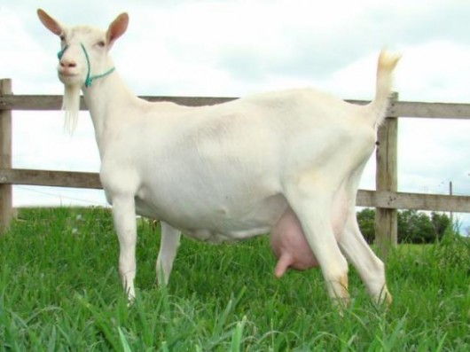
Saanen
Branca ou creme-clara, pelos curtos e orelhas eretas. Corpo alongado e grande aptidão leiteira. Precisa de sombra e conforto térmico, especialmente em regiões quentes.
Origem: Suíça
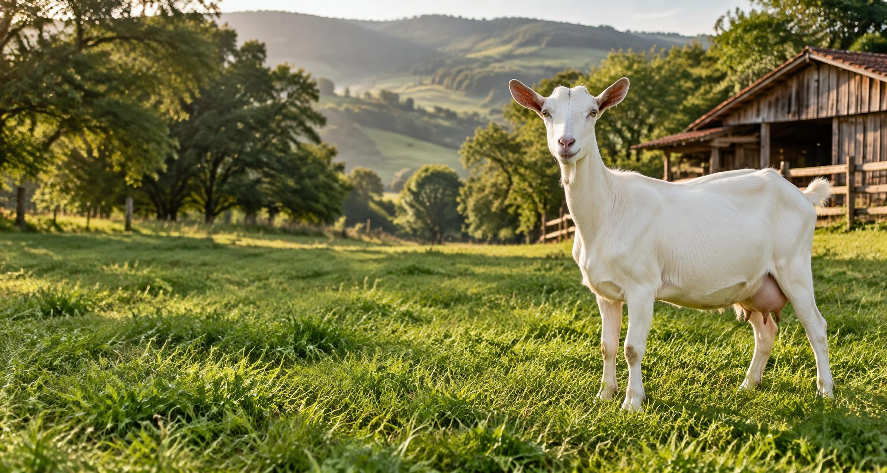
Entre pastos, apriscos e descobertas.
Um mergulho no cuidado com os caprinos
e na
riqueza da vida na fazenda.
Curiosas, sociáveis e cheias de personalidade, as cabras fazem parte da história da agricultura há milhares de anos. Criá-las é aprender a observar, alimentar, proteger e respeitar a vida. Aqui, o conhecimento encontra o dia a dia da caprinocultura — do primeiro colostro à ordenha, da escolha da raça ao cuidado com cada casco.
As orelhas, a pelagem e o formato do corpo ajudam a reconhecer as raças. A aptidão conta o resto da história.

Branca ou creme-clara, pelos curtos e orelhas eretas. Corpo alongado e grande aptidão leiteira. Precisa de sombra e conforto térmico, especialmente em regiões quentes.
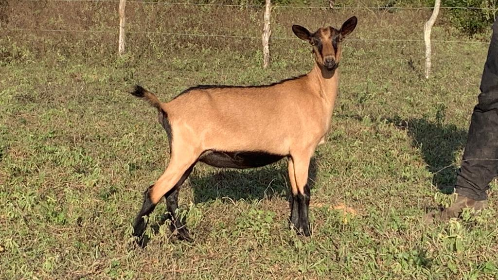
Orelhas eretas e perfil nasal reto. Possui vários padrões de pelagem; na parda, são comuns as marcas negras no dorso e nas pernas. É ativa, adaptável e boa produtora de leite.
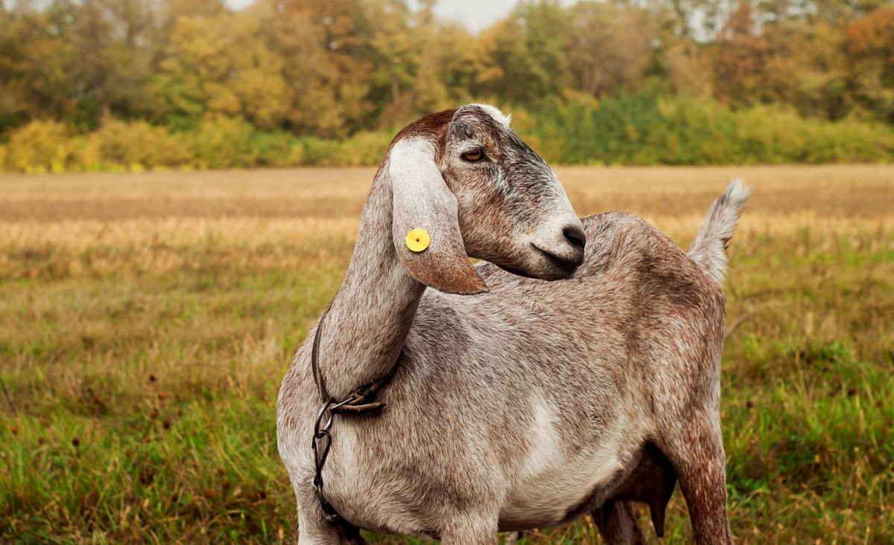
Orelhas longas e caídas, nariz convexo e cores variadas. Tem dupla aptidão; seu leite costuma apresentar maior teor de gordura, interessante para a fabricação de queijos.
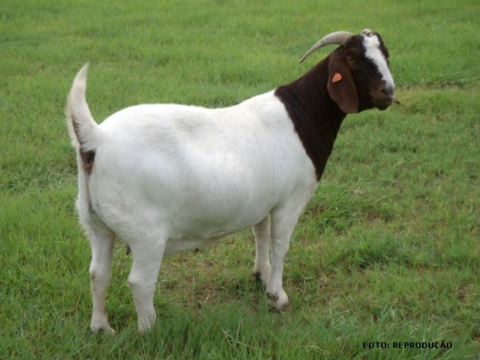
Corpo geralmente branco, cabeça castanha ou avermelhada e orelhas pendentes. Porte robusto e musculatura desenvolvida: uma raça selecionada principalmente para carne.
O abrigo dos caprinos é o aprisco. Deve ficar em terreno bem drenado, proteger da chuva e do sol forte e permitir ventilação sem correntes de ar sobre as crias.
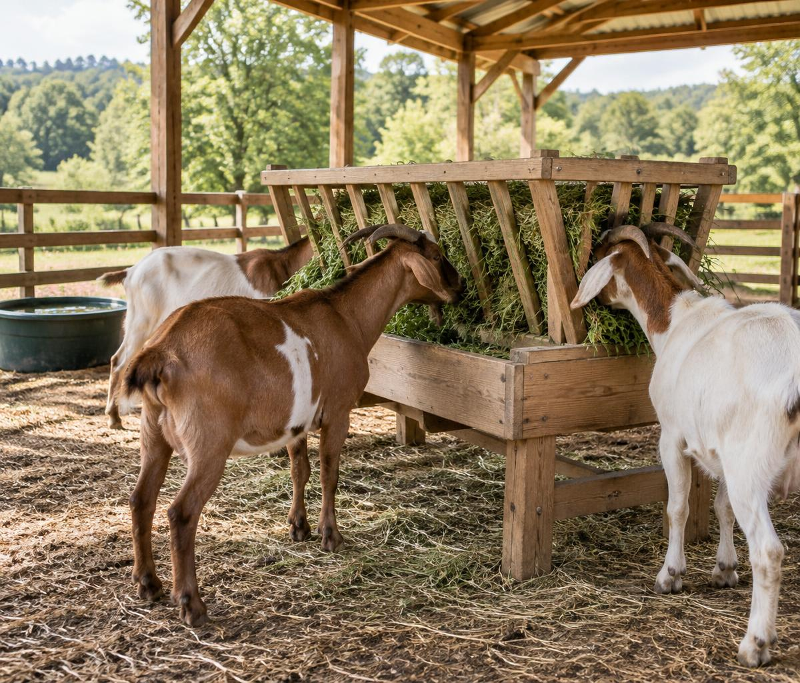
Cabras são ruminantes, não “comedoras de tudo”. Precisam de alimento de qualidade, água e minerais adequados.
O volumoso — pasto, folhas de plantas seguras, feno ou silagem bem conservada — sustenta o funcionamento do rúmen. O concentrado complementa energia e proteína quando necessário. A quantidade depende do peso, da fase de vida, do alimento disponível e da produção; não existe uma única porção correta para todo o rebanho.
Colostro nas primeiras horas, para proteção imunológica, seguido de leite em mamadas regulares. Na primeira semana, iniciar acesso a água limpa, feno macio e concentrado inicial apropriado, em pequenas quantidades. Não substituir leite por pasto nesta fase.
Continuar o aleitamento conforme o sistema de criação. Aumentar gradualmente a oferta de feno e ração inicial. Observar consumo e crescimento antes de reduzir o leite. Mudanças bruscas favorecem diarreia e distúrbios digestivos.
Boa forragem e minerais durante toda a gestação. No terço final, cresce a demanda por energia e proteína: ajustar a suplementação com orientação técnica. Evitar tanto o emagrecimento quanto a obesidade e proteger contra toxemia da gestação.
Volumoso de qualidade à vontade, água abundante e concentrado ajustado à produção. O leite exige energia, proteína e minerais. Monitorar a condição corporal da mãe e verificar se os cabritos estão mamando e ganhando peso.
Pasto ou volumoso de boa qualidade, água e suplemento mineral específico para caprinos. Adultos em manutenção podem precisar de pouco ou nenhum concentrado; reprodução e lactação mudam as exigências. Evitar excesso de grãos, que pode causar acidose.
Ser seletiva não torna a cabra imune a venenos. Fome, falta de forragem e restos de poda aumentam o risco.
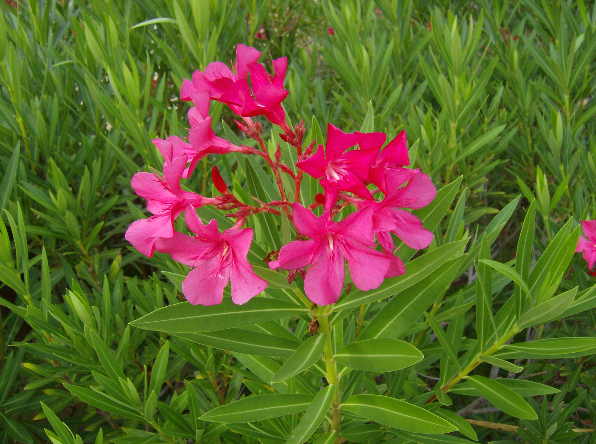
Arbusto ornamental de folhas estreitas e flores em grupos. Seus glicosídeos cardíacos podem provocar alterações no coração, fraqueza e morte. Partes secas também são perigosas. Nunca oferecer podas.
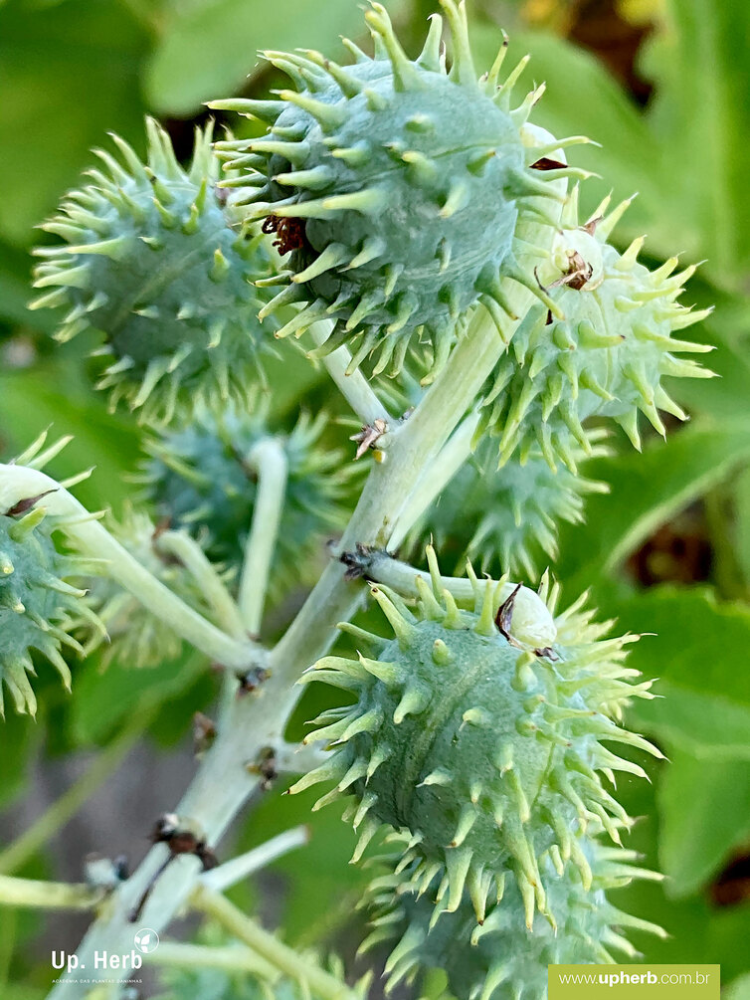
Folhas grandes, palmadas, e frutos com sementes mosqueadas. As sementes contêm ricina, especialmente perigosa quando mastigadas; as folhas também podem intoxicar. Não usar sementes, folhas nem torta sem destoxificação validada.
Arbusto de folhas ásperas, bordas serrilhadas e pequenas flores coloridas agrupadas. Algumas variedades contêm lantadenos, que lesam o fígado e podem causar fotossensibilização, pele ferida e icterícia.
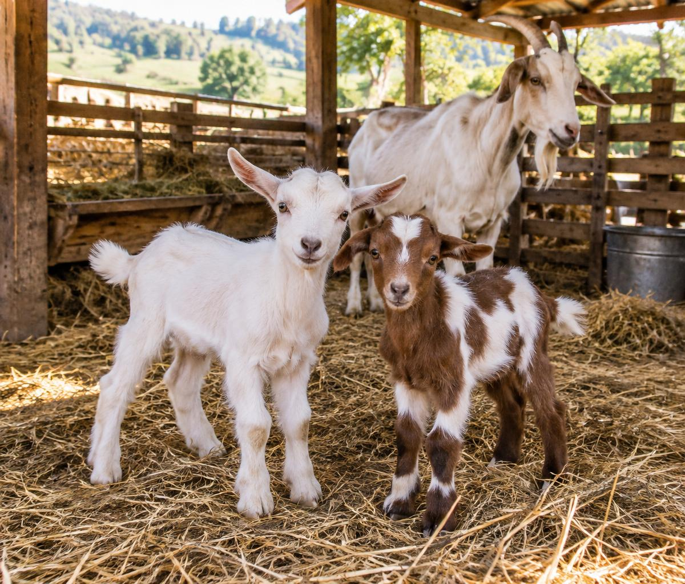
Colostro, calor e observação da mamada.
Faixa comum para desmame, com crescimento e consumo adequados.
Duração média da gestação de uma cabra.
Desmame é retirar o leite da dieta. É comum fazê-lo entre 60 e 90 dias, dependendo do manejo, do peso e da ingestão de alimento sólido. O cabrito deve estar saudável, crescendo e consumindo ração e volumoso de forma consistente. A redução gradual do leite ajuda na transição. Não desmame um animal debilitado apenas porque atingiu certa idade.
Apartação significa separar fisicamente mãe e cria; não é necessariamente desmame. Em sistemas de corte ou aleitamento natural, a separação costuma acompanhar o desmame. Em rebanhos leiteiros, pode acontecer logo após o nascimento para aleitamento controlado e prevenção sanitária, desde que se garanta colostro seguro imediatamente e leite suficiente.
Em programas de controle da CAE, usa-se protocolo técnico de colostro tratado e leite seguro. Não se improvisa: o tratamento do colostro difere da pasteurização comum. Após o desmame, separar também os sexos antes da puberdade evita acasalamentos precoces; alguns machos são férteis ainda jovens.
Observe respiração, vigor, temperatura e mamada; mantenha a cama seca e faça o cuidado do umbigo conforme o protocolo da propriedade. Dificuldade no parto, falta de mamada ou fraqueza exigem assistência. Procedimentos invasivos são responsabilidade de profissional capacitado.
Genética, alimentação, bem-estar e higiene trabalham juntos. Uma boa leiteira é muito mais que uma raça famosa.
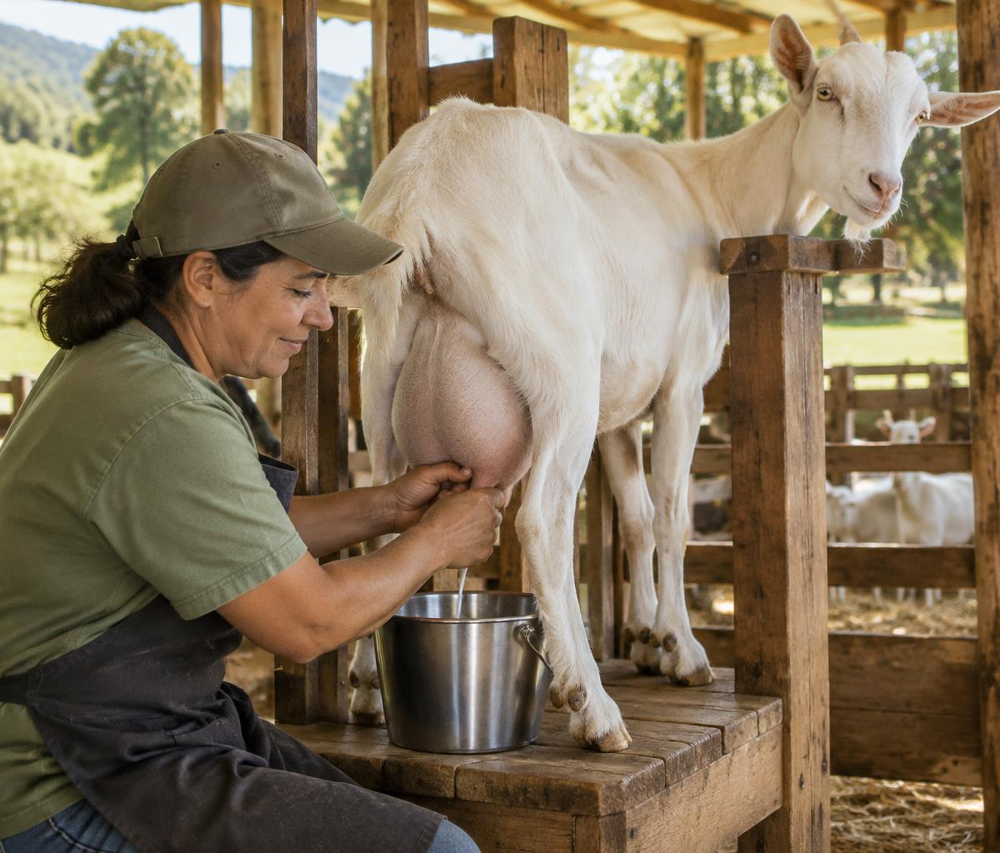
O tempo é contado depois que todo o leite atinge a temperatura. O método rápido exige equipamento que controle esse processo. Em seguida, resfriar rapidamente e conservar refrigerado, em geral a 4 °C ou menos, em recipiente higienizado.
A pasteurização destrói microrganismos patogênicos e reduz a carga microbiana; não esteriliza o leite e não recupera leite deteriorado. Use termômetro confiável e protocolo validado. Leite de cabra cru também pode transmitir doenças.
Relatório de referência: principais problemas, sinais, prevenção e condutas. Diagnóstico e tratamento cabem ao veterinário.
| Problema | Sinais e sintomas | Como prevenir | Conduta / tratamento |
|---|---|---|---|
| Verminose gastrointestinal | Emagrecimento, mucosas pálidas, fraqueza, edema abaixo da mandíbula; diarreia pode ocorrer, mas não está sempre presente. | Manejo de pastos, nutrição, exames de fezes e avaliação por pessoal treinado. Evitar vermifugação indiscriminada. | Antiparasitário selecionado pelo veterinário, considerando exames e resistência. Tratar anemia e desidratação quando necessário. |
| Coccidiose | Mais comum em jovens: diarreia, às vezes com sangue, atraso no crescimento, desidratação e prostração. | Camas secas, cochos limpos, boa lotação e separação de faixas etárias. | Exame e anticoccidiano prescrito; suporte hídrico e correção do manejo. Vermífugos comuns não resolvem toda coccidiose. |
| Mastite | Úbere quente, dolorido ou endurecido; leite alterado, queda de produção. Formas subclínicas não têm sinais visíveis. | Higiene de ordenha, tetos secos, manutenção do equipamento e acompanhamento dos registros. | Avaliação, coleta de leite quando indicada e tratamento dirigido. Respeitar carência; leite suspeito não entra no consumo. |
| Linfadenite caseosa | Abscessos nos linfonodos, os “caroços”; forma interna pode causar emagrecimento sem caroços externos. | Comprar animais de origem controlada, quarentena, evitar ferimentos e contaminação do ambiente. | Isolar e chamar o veterinário. Não estourar abscessos no aprisco; drenagem e destino do animal exigem plano sanitário. |
| CAE — artrite-encefalite caprina | Artrite crônica, aumento das articulações, perda de peso; jovens podem ter sinais neurológicos. Há portadores sem sintomas. | Testagem, controle de entrada, separação sanitária e colostro/leite seguros em programa técnico. | Não há cura que elimine o vírus. Manejo de suporte e decisões sanitárias para impedir transmissão. |
| Pododermatite / lesões dos cascos | Claudicação, dor, mau cheiro, inflamação e lesões entre os dedos ou na parede do casco. | Piso seco, inspeções, casqueamento correto e quarentena de animais novos. | Identificar a causa, limpar e tratar conforme prescrição. Pedilúvio ou antibiótico só quando indicados e de forma correta. |
| Ectima contagioso | Crostas nos lábios e focinho, às vezes em tetos e pés; dificuldade para mamar ou comer. | Isolar casos, higiene e manejo cuidadoso. É uma zoonose: usar proteção ao manipular animais. | Cuidados locais e suporte nutricional; tratar infecções secundárias se necessário. Vacina depende do risco e do veterinário. |
| Enterotoxemia | Quadro rápido, dor abdominal, sinais neurológicos, diarreia ou morte súbita. | Vacinação conforme calendário local e mudanças graduais na alimentação; evitar excesso de concentrado. | Emergência veterinária. Tratamento precoce e suporte podem ser necessários; a evolução pode ser muito rápida. |
| Toxemia da gestação | No fim da gestação: falta de apetite, fraqueza, isolamento e sinais neurológicos. | Monitorar condição corporal e garantir energia adequada, sobretudo em gestação múltipla. | Emergência: correção metabólica e avaliação obstétrica pelo veterinário. Não esperar que o animal volte a comer sozinho. |
| Urolitíase em machos | Esforço para urinar, gotas ou ausência de urina, inquietação e dor abdominal. | Água à vontade, dieta equilibrada e relação entre minerais formulada por técnico; evitar excesso de grãos. | Urgência veterinária: a obstrução pode romper a bexiga. Pode exigir procedimento clínico ou cirúrgico. |
São pequenos apêndices de pele, também chamados de brincos ou zarzos, geralmente pendentes no pescoço. A presença é hereditária e varia entre animais. Não são uma doença nem prova de maior produção de leite; não têm função fisiológica bem estabelecida. Não precisam ser cortados.
Com o animal contido com calma, limpe o casco e remova pequenas porções da parede crescida, usando ferramenta própria. Nivele gradualmente o apoio, preservando sola e tecido vivo. Pare antes de atingir tecido sensível: não deve sangrar. O casqueamento evita deformações, acúmulo de sujeira e dificuldade de locomoção. A frequência depende do piso e do crescimento; confira os cascos regularmente e aprenda com profissional.
Cabras preferem muitas folhas, brotos e arbustos, alcançam vegetação mais alta e exploram espécies que bovinos utilizam menos. Por isso ajudam a controlar vegetação indesejada em pastejo planejado. Não são herbicidas vivos: podem descascar árvores, danificar mudas e reduzir a regeneração. Proteja espécies úteis, retire plantas tóxicas e evite superpastejo.
Após curtimento, a pele vira couro leve, resistente e flexível. Conheça seis usos tradicionais.
As fotografias abaixo mostram objetos de acervos descritos como pele caprina, kidskin ou couro tipo marroquim/safiano. A espécie deve ser confirmada na ficha do objeto: nem toda bolsa, carteira ou luva de couro é feita de cabra. No tambor, a pele é usada como membrana, não necessariamente curtida como o couro de uma bolsa.
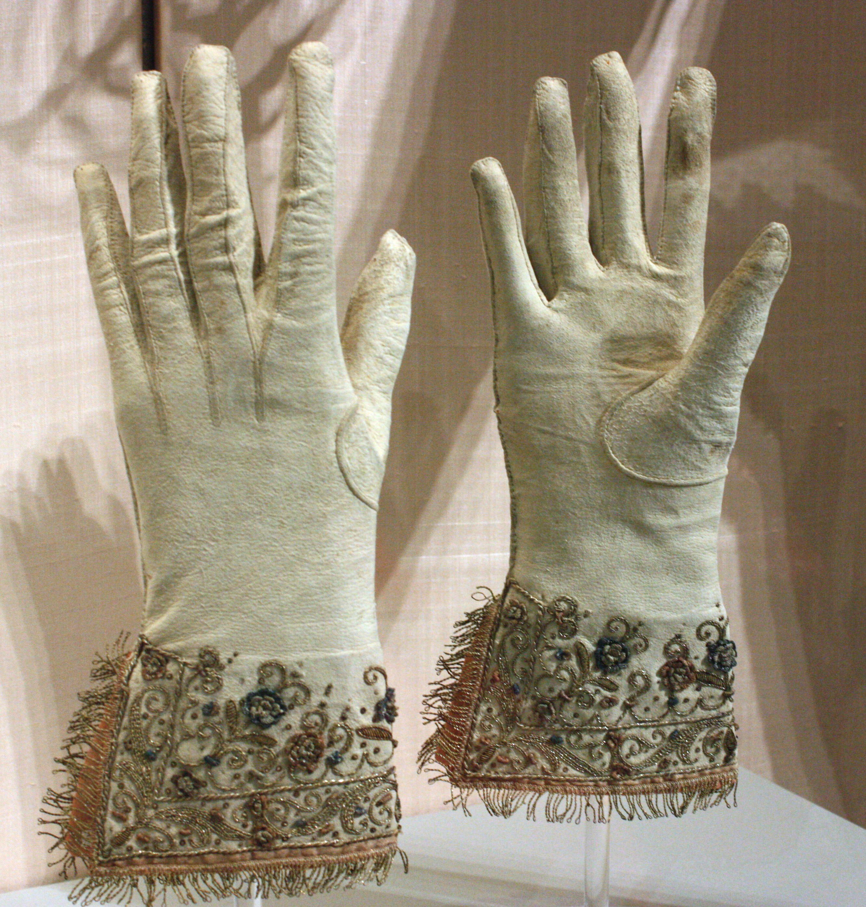
A pele de cabrito permite peças finas e flexíveis. Exemplo histórico de luvas bordadas em kidskin.
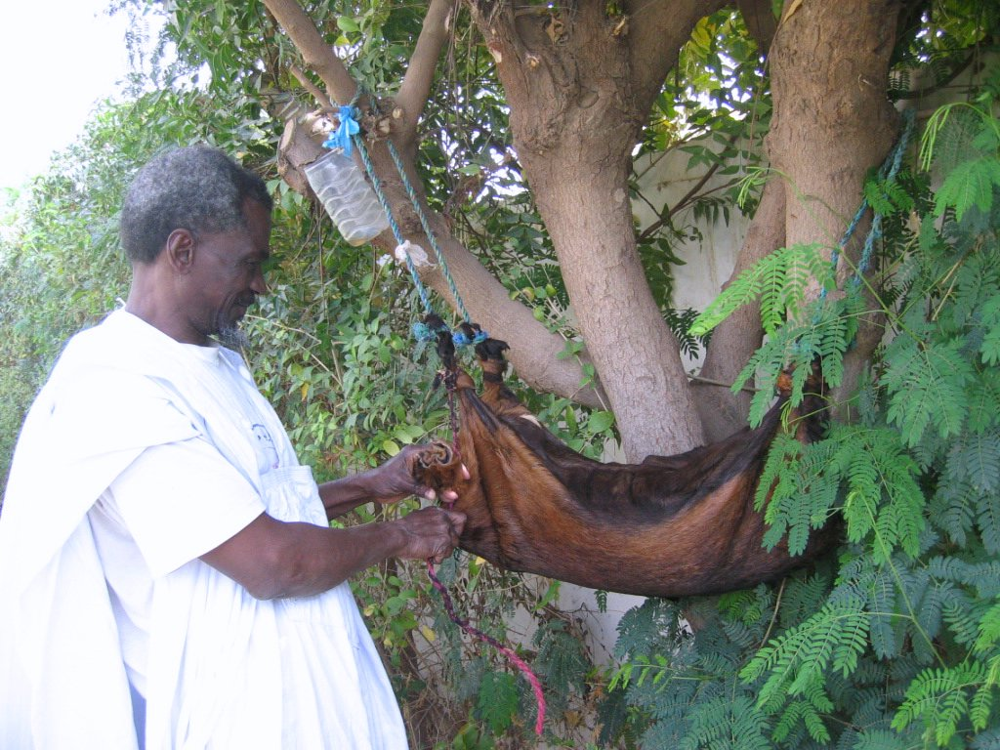
Peles inteiras podem formar recipientes tradicionais; couro curtido também é usado em bolsas.
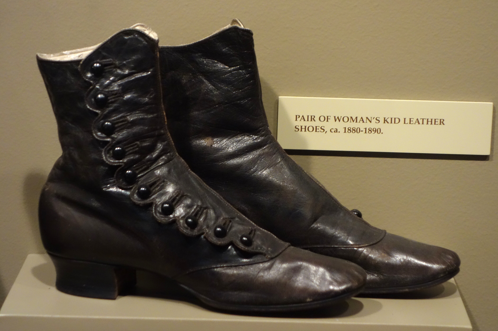
O couro de cabrito é utilizado no cabedal e em forros. Na foto, calçado feminino histórico em kid leather.
Couro fino e maleável pode receber tingimento e acabamento. Exemplo em safiano, tradicional couro caprino.
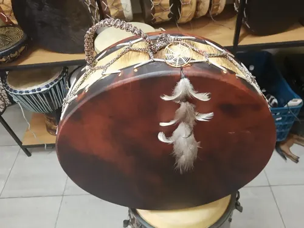
Membranas de pele caprina dão som a instrumentos como pandeiros, djembês e alguns tambores dhol.
O marroquim de cabra é tradicional em capas de livros de luxo. Exemplo de encadernação de Zaehnsdorf, de 1896.
Fotografias de referência: Wikimedia Commons e respectivos acervos. A autoria e a licença estão disponíveis nas páginas dos arquivos.
A caprinocultura é a atividade de criar caprinos para produzir alimentos, matérias-primas e renda. Ela reúne conhecimentos de nutrição, reprodução, sanidade, instalações e administração. Sua importância não se resume ao número de animais: está ligada à capacidade de transformar recursos da propriedade em produtos úteis, conservar tradições rurais e criar oportunidades de trabalho para famílias e comunidades.
O leite de cabra pode ser consumido após processamento seguro e utilizado na fabricação de queijos, iogurtes e outros derivados. A carne também integra hábitos alimentares de diferentes regiões e representa uma alternativa de produção pecuária. A pele pode ser aproveitada em artigos de couro, enquanto determinadas raças fornecem fibras como o mohair. O esterco, quando manejado e compostado adequadamente, contribui para a fertilidade do solo e para a integração entre criação animal e agricultura.
Uma característica marcante dos caprinos é o comportamento de selecionar folhas, brotos e arbustos. Esse hábito permite aproveitar vegetação diferente daquela preferida por outros animais. Muitas populações locais apresentam adaptação a ambientes quentes e a condições do semiárido. Entretanto, rusticidade não significa ausência de necessidades: cabras precisam de água, alimentação suficiente, sombra, abrigo seco e prevenção de doenças. Mesmo animais adaptados sofrem quando esses cuidados são negligenciados.
Para a agricultura familiar, a criação pode diversificar a renda e reduzir a dependência de uma única atividade. Pequenos rebanhos permitem acompanhamento individual e aprendizado progressivo, mas ainda exigem planejamento. O produtor precisa conhecer os custos de alimentação, mão de obra, assistência veterinária e instalações, além de verificar a disponibilidade de compradores e as exigências de inspeção. Qualidade e regularidade são tão importantes quanto o volume produzido.
A sustentabilidade depende do manejo. A lotação deve respeitar a capacidade da vegetação, evitando erosão e perda de plantas úteis. Cercas, rotação planejada e proteção de áreas sensíveis ajudam a equilibrar produção e conservação. Também são essenciais o destino correto dos resíduos, o uso responsável de medicamentos e o cuidado com o bem-estar animal.
Por fim, a caprinocultura tem valor educativo. Observar uma cria crescer, registrar a produção de leite e reconhecer sinais de doença desenvolve responsabilidade, disciplina e respeito pela vida. Para os Desbravadores, a especialidade aproxima o conhecimento da experiência concreta. Uma criação bem conduzida demonstra que produzir e cuidar não são objetivos opostos: o bom resultado começa no compromisso diário com os animais, com as pessoas e com o ambiente.
Leitura não substitui vivência. As atividades abaixo precisam ser realizadas e acompanhadas pelo instrutor e pelo responsável da propriedade.
Cuide de uma cabra por pelo menos um mês. Combine previamente a rotina, quem supervisiona e como registrar as tarefas. Não trabalhe sozinho com reprodutores, máquinas ou animais doentes.
As marcações e campos são apenas um apoio temporário: não são salvos. Guarde os registros em caderno ou imprima a página pelo navegador.
Ordenhe uma cabra de manhã ou à tarde, por pelo menos uma semana, sob supervisão. Use o mesmo horário e registre diariamente a quantidade real de leite. Não invente produção nem altere o manejo da fazenda para preencher a tabela.
| Dia | Data / hora | Leite (L) | Observação |
|---|---|---|---|
| 1 | |||
| 2 | |||
| 3 | |||
| 4 | |||
| 5 | |||
| 6 | |||
| 7 |
Inclua também identificação do animal, pessoa que supervisionou, alterações no leite e cuidados realizados. Litros e quilogramas são unidades diferentes: registre qual foi medida.
Visite uma propriedade com criação de caprinos e produza um relatório de pelo menos 300 palavras sobre as técnicas de manejo que realmente observou. Peça autorização para fotos e siga as regras de biossegurança. Este relato não pode ser substituído por uma visita fictícia.
Data, município, responsável, finalidade da criação, raças e tamanho aproximado do rebanho. Conte como a visita foi organizada, sem expor dados pessoais sem autorização.
Instalações, água, alimentação, reprodução, cuidados com crias, casqueamento, sanidade e ordenha. Diferencie o que viu do que foi explicado pelo produtor.
Relacione os cuidados observados ao bem-estar animal. Registre desafios, práticas positivas e o que aprendeu. Para chegar às 300 palavras, desenvolva exemplos concretos em vez de repetir frases.